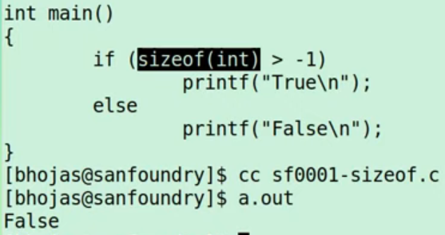

Answer is false
C has affinity for unsinged over signed.
There is a comparison between unsigned long and signed int.
Because the first is unsigned, the second is treated as unsigned also, -1=FFFF'FFFF, biggest unsigned number.

Answer is false.
float is 6 deg of perssesion, while double is 10 deg.
C has an affinity for double, the 0.1 in the if statement is treated as double as instead of float.
The end comparision is 0.100000 ==? 0.1000000000, which ends up false.

Answer is 4,1,1.
sizeof() is a compile time operator, not a runtime, it evaluetes during compile time.
In runtime, the sizeof() is allready defined as "4".

Answer is "Segmentation fault".
The SIGSEGV (segmentation violation), occures due to unallowed memory access.
The pointer p is assigned to the memory address 0x0.
Trying to write 'A' at memory location 0x0, will cause SIGSEGV.

The answer is '' (nothing).
The really bad indentation is confusing..
The "else" is part of the nested 'if' statement.
The nested never gets executed due to the fact the 'a' is not bigger than 'b'.
For the parent 'if' there is no 'else'.